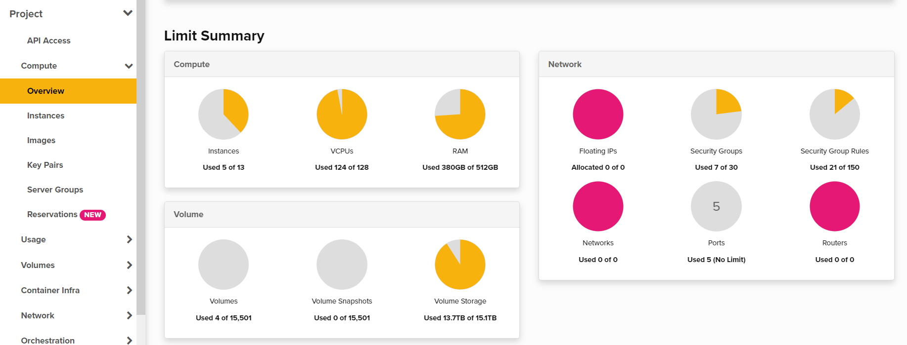
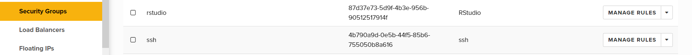
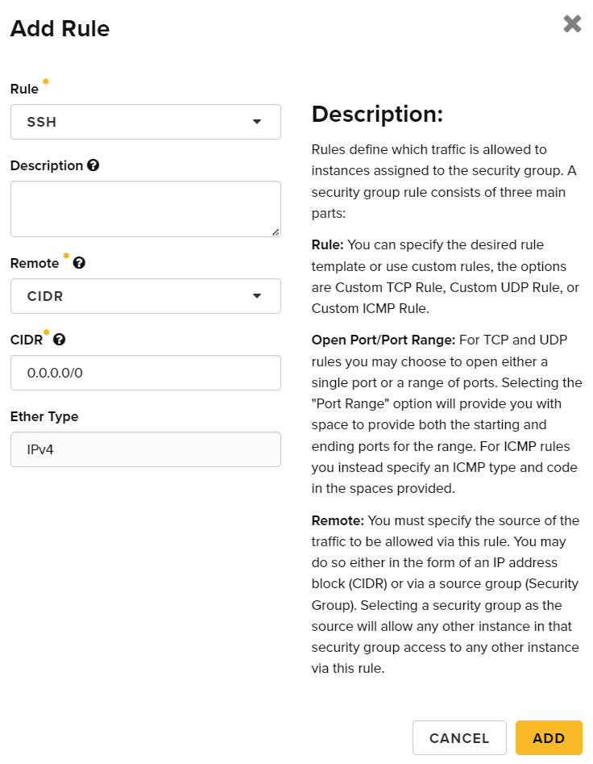
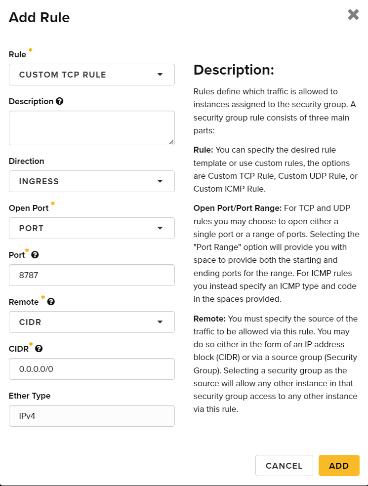
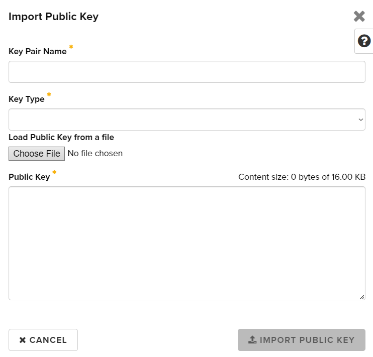
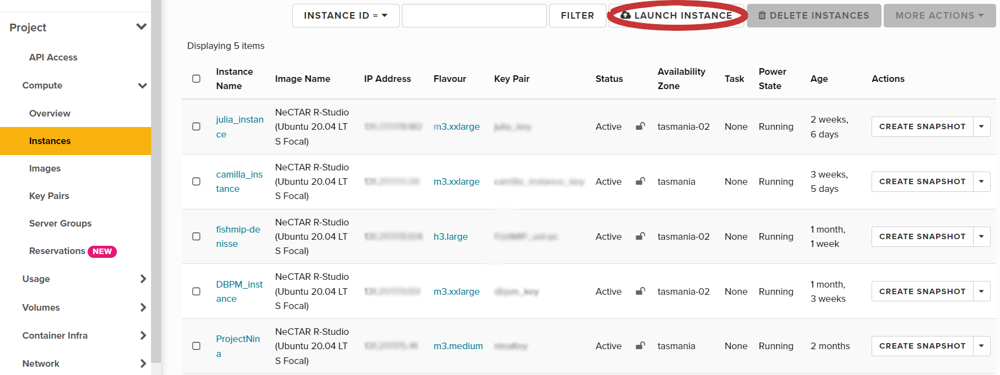
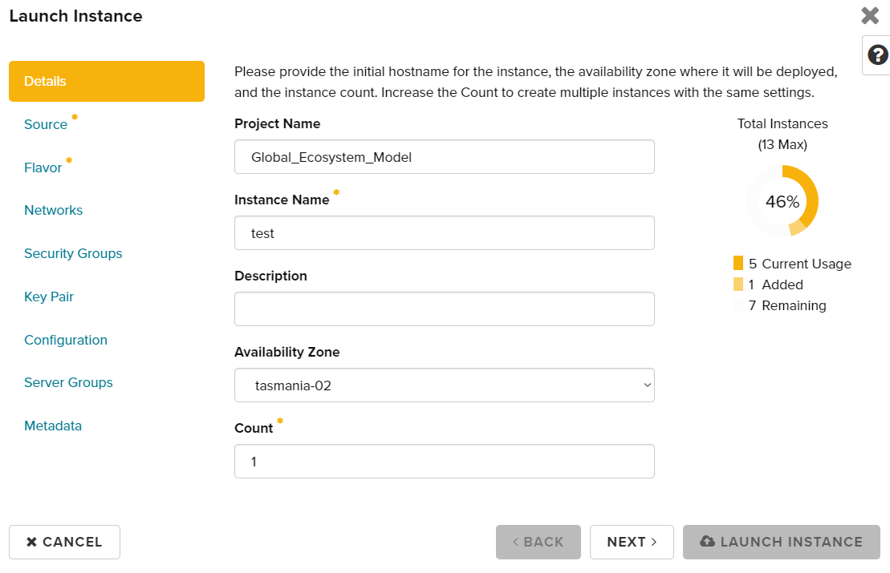
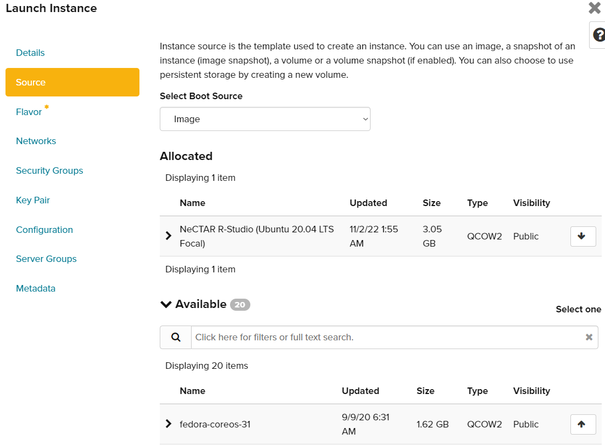
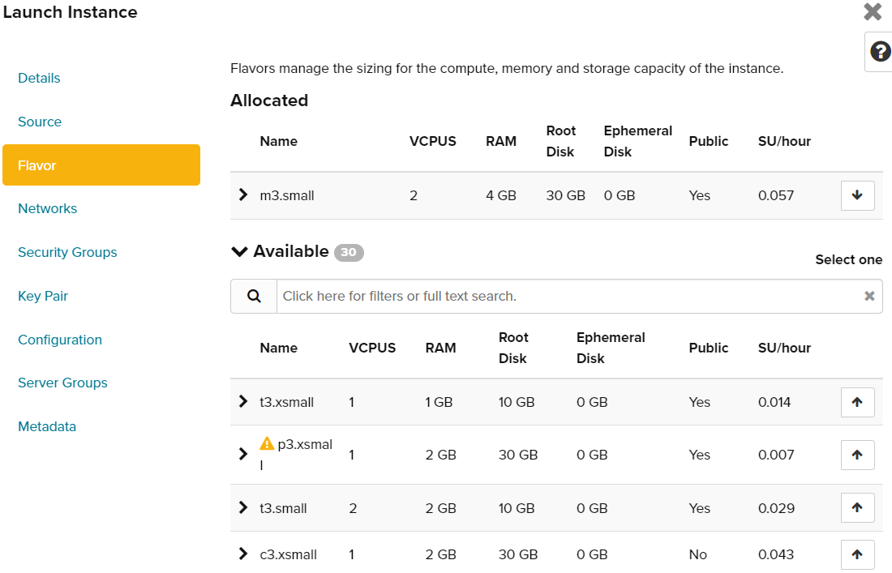
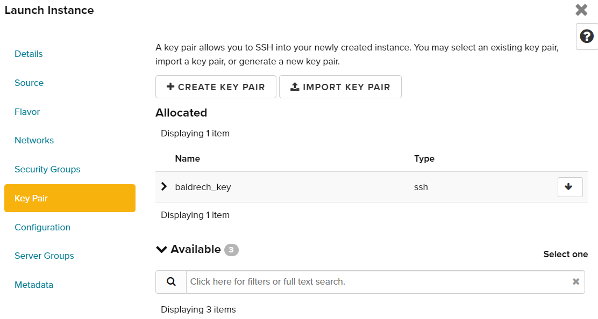

Sipping Nectar: A Guide to Setting Up Your RStudio Server on a Supercomputer
Introduction
The goal of this tutorial is to show you how to setup a Rstudio session on nectar. It is a simplified and summarised version of the resources found here: https://tutorials.rc.nectar.org.au If you wish to go beyond what offers this tutorial, do not hesitate to visit the nectar website.
why?
Requirements
How
First, go to https://dashboard.rc.nectar.org.au/ and log in via AAF. Find your organisation (University of Tasmania) and connect to your dashboard.
If you are connecting for the very first time, you will be allocated a project with limited resources (e.g. some cores and ram) for a limited time to get a taste of nectar.
To get more resources, you are going to need to fill an application or be added to an existing project.
Application for resources
check with a student what it looks like
Once you have resources available in your project, you can start creating instances. If you have access to multiple projects, these can be selected in the top left corner in blue.
Creating a nectar instance
In the sidebar at Project/Compute/Overview, you can check how much resources are available to create instances.

In there you can check how many instances you can create, as you can have more than one per project. How many VCPUs you can use (the number of cores) and much RAM they get access to (their memory) and many other details.
Security groups
Security groups provide network access to your instances. We will configure two security groups for ease of use. You can view existing security groups in the Network/Security Groups section.

We will create a security group to connect via SSH and another to connect directly to Rstudio via a browser. If these groups already exist, you can skip the following section.
To create a new security group, click on the “Create Security Group” button. You will be prompted to enter a name and an optional description for the new security group. After clicking “Create Security Group,” you will be able to edit the group’s rules.
For SSH, we will add an ingress rule that is already pre-configured. Click on “Add New Rule” and select SSH in the first dropdown menu.

The rest of the fields will be automatically filled, so just click “Add” to create a new security group for configuring the SSH connection.
For Rstudio, we will add a custom ingress rule. Select “Custom TCP Rule” and add “8787” to the “Port” field, as shown in the picture below:

This will allow you to access Rstudio directly from a browser.
Key pairs
To work with ssh, we need to setup a ssh key pair on your laptop, then upload it to nectar.
To do so, open a terminal on your laptop and type:
ssh-keygenYou will be prompted to enter the path where to save the new key pair. The default folder where keys are usually stored is Users/yourname/.ssh/ but you can choose to save them anywhere. Keys cannot be recovered once lost.
Once the key is saved, the private part of the key (no extension) will stay on your laptop and serve as identify yourself to the instance. The public part of the key (.pub) will be uploaded on nectar. To do so go to Compute/Key pair and then click import public key. Give it a name (that you can link back to the key on your computer) and import the public part of the key. Key type should be set to ssh.

Once a key is imported it will be available to select when creating a new instance.
new instance
In the Project/Compute/Instance tab, you can see your current instances and create a new one.
 Click on “launch instance” and this menu will appear

The project name is automatically filled. Write a name for your instance and select one of the Tasmanian servers in the availability zone. The “count” field is to create duplicates of your new instance.
The next tab describe what operating system you wish to install on the new instance.

Select the Nectar R Studio of the latest version in the list, as in the picture. This will automatically install linux with R and Rstudio on the intance without any setup needed on your part.
Then the next tab describes how much resources you are going to allocate to the instance. This will depend on how much is available and how much you need to work with. An average laptop has 8 VCPUs and 16 GB of RAM for reference.

Now it’s time to use the security groups we created earlier. Allocate the available security groups as in the picture. We need to be able to connect via ssh and https (Rstudio group). The menu also offer to create an admin password but I am not sure this feature is working at the moment.

Finally, since we want to use SSH we need to assign a public key to the instance. Select the one you are using from the “available” list or import one if you haven’t done so.

You can ignore the last three tabs. Click Launch instance and you are done. The creation of the instance might take a while depending on its size.
Once it’s done, an IP address will be assigned to it. We are going to use this address to connect to it.
Connecting for the first time
At the moment, you cannot connect to Rstudio via browser because there is no password setup for the admin account of the instance. Remember, every time the administrator account of every instance is going to be “ubuntu”.
We are going to connect via SSH first. To do so open a terminal (Mac/Linux) or use MobaXterm (GUI for Windows, https://mobaxterm.mobatek.net). Type
ssh -i path_to_private_key ubuntu@IP_adressThis will connect you remotely to the instance. Check that the path and IP address are correct if it doesn’t work!
Then to change a password type:
sudo passwd ubuntuYou will be prompted to enter the password twice. You are now working on linux so password don’t appear on the screen will being typed, if you were wondering.
Now that the password is set, open a browser and type your IP address followed by “:8787” without the quotes. This will send you to a Rstudio page offerint to enter your username and password. Remember your username in that case is ubuntu, unless you created more users while doing the previous step.
Linking storage
create your volume
mount rd type storage with bash
First, ask for permission of read/write for /rd1… on the IP Then set up in the command line
sudo vi /etc/fstab
#in vim add
data5.tpac.org.au:/rd1/gem/PUBLIC /rd/gem/public/ nfs nfsvers=3,rw,nosuid,hard,intr,bg,proto=tcp 0 0
data5.tpac.org.au:/rd1/gem/PRIVATE /rd/gem/private/ nfs nfsvers=3,rw,nosuid,hard,intr,bg,proto=tcp 0 0
sudo mkdir -p /rd/gem/private
sudo mkdir -p /rd/gem/public
# might need these packages
sudo apt install nfs-common
sudo apt install cifs-utils
sudo mount -a